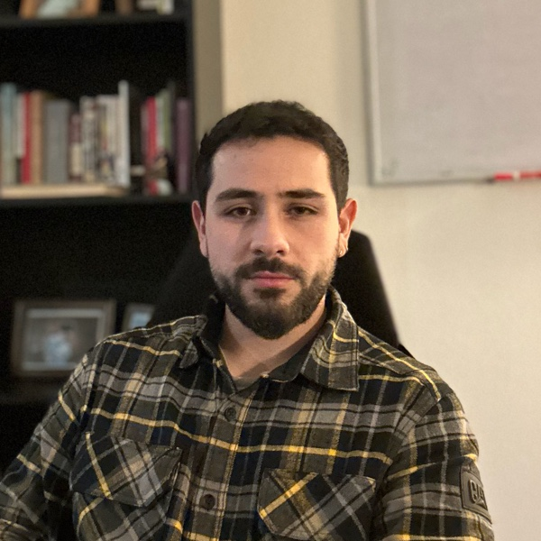

Pablo Cortés Castillo
PhD candidate in Mathematical Sciences, Portland State University
Advisor: Jay Gopalakrishnan
I am looking for postdoctoral positions starting in mid-2027.
Research Interests & Background
My research develops a posteriori error control on parametric solution manifolds with discontinuous Petrov–Galerkin (DPG) methods, seeking two-sided error bounds that hold for arbitrary trial functions, not only discrete solutions, and remain uniform along the manifold. The work spans the design of the DPG test-space topology, the construction of Fortin operators, and extensions to nonlinear and transport problems. Since the resulting estimators are computable, they can drive adaptivity, reduced-basis methods and PDE-constrained optimization, and in particular serve as variationally correct loss functions for learning parameter-to-solution maps with neural networks.
Interests: Reliable and efficient functionals and residuals, DPG methods, Fortin operators for broken spaces, parameter-to-solution manifolds and well-posedness of operators in Bochner spaces, non-uniform inf-sup conditions, operator learning, and high-performance simulation of physical phenomena.
Background: Finite element methods, PDEs, mathematical physics, inverse problems, PDE-constrained optimization and adjoint analysis, parallel algorithms.
Education
-
Doctor of Philosophy in Mathematical Sciences – Candidate2023 – June 2027 (expected)
-
Master of Science in Mathematical Sciences2025
-
Master of Science in Engineering2024
-
Professional Degree in Mathematical and Computational Engineering2024
-
Bachelor of Science in Engineering2021
Research Experience
-
Graduate Research Intern – Lawrence Livermore National Laboratory2026 – present
-
Research Assistant – Portland StateFall 2024 – Spring 2025, Winter 2026
Research
-
DPG loss functions for learning parameter-to-solution maps by neural networks2026Journal arXiv
-
Variationally correct loss functions for nonlinear parametric problems and their neural approximations2026arXiv
-
Global error estimators for parametric monotone nonlinearities and neural approximations2026arXiv
-
Fortin operators for DPG advection discretizations2026arXiv
-
Inverse problem of identification of Lamé parameters in elastodynamics equation using Symplectic HDG-FEM direct solver schemes2024
Selected Talks
-
MFEM Community WorkshopSeptember 2026
-
SIAM PNW Biennial MeetingOctober 2025
Leadership & Service
-
Society of Industrial and Applied Mathematics (SIAM)2025 – present
-
Research Training Group in Computation and Data Enabled Science (RTG in CADES)2023 – present
Skills
Programming: Python (Advanced), C++ (Advanced), PyTorch, Matlab, Mathematica,
R, SQL, HPC, NGSolve, MFEM.
Languages: Spanish (native), English (proficient).
Awards & Funding
-
SIAM Travel Award 2025October 2025
-
Frank Cater Scholarship2023 – 2025
Teaching Experience
-
Lecturer – Portland State
- MTH111Z – PrecalculusFall 2026
- MTH111Z – PrecalculusFall 2025
- Bootcamp – Introduction to Finite Element MethodsSummer 2025
- Bootcamp – Introduction to Finite Element MethodsSummer 2024
-
Teaching Assistant – Portland State
- Intro. to Linear AlgebraSpring 2024
- Calculus IIWinter 2024
- TrigonometryFall 2023
-
Teaching Assistant – PUC Chile
- Advanced Linear Algebra and ApplicationsFall 2022
- Advanced Linear Algebra and ApplicationsSpring 2022
- PrecalculusFall 2021
- Linear AlgebraFall 2019
- CalculusSpring 2019
- Statics & DynamicsFall 2018
Industry Experience
-
Servicios Financieros Lider-BCI2022 – 2026